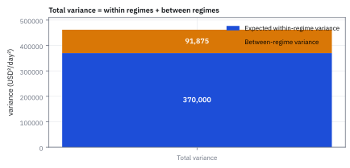
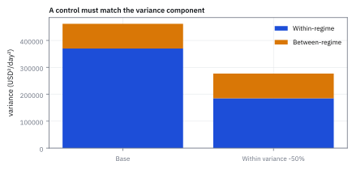

2.2 ความผันผวนมาจากภายในกลุ่ม หรือจากค่าเฉลี่ยที่ต่างกัน?
ความแปรปรวนรวมเท่ากับการแกว่งภายในแต่ละกรณี บวกกับการที่ค่าเฉลี่ยของแต่ละกรณีอยู่ห่างกัน
ทุกเย็น ฝ่ายความเสี่ยงต้องรายงานว่ากำไรขาดทุนรายวันของพอร์ตหนึ่งแกว่งได้กว้างแค่ไหน ตัวเลขที่ใช้คือ standard deviation (SD) ซึ่งบอกว่ากำไรของแต่ละวันมักอยู่ห่างจากกำไรเฉลี่ยประมาณเท่าไร SD ยิ่งใหญ่ วันที่เสียเงินหนักก็ยิ่งเกิดได้ง่าย
พอร์ตนี้เจอวันอยู่สองแบบ เรียกแต่ละแบบว่า “สภาวะ” ของตลาด (ตัวเลขสมมติ):
- วันสงบ เกิด 75% ของวัน กำไรเฉลี่ย \$200 และ SD \$400
- วันตึงเครียด เกิด 25% ของวัน ขาดทุนเฉลี่ย \$500 และ SD \$1,000
ร่างรายงานเอา SD ของสองสภาวะมาเฉลี่ย โดยถ่วงด้วยความถี่ของวัน:
ผู้จัดการความเสี่ยงควรเซ็นผ่านตัวเลขนี้ไหม ถ้าไม่ ตัวเลขที่ถูกคือเท่าไร
ลองตอบก่อนเปิดเฉลย
เซ็นไม่ได้ SD ที่ถูกคือประมาณ \$679.61 ต่อวัน มากกว่าในร่าง $679.61/550\approx1.24$ เท่า ร่างพลาดสองเรื่อง
- เฉลี่ย SD ตรง ๆ ทั้งที่ต้องเฉลี่ย SD ยกกำลังสอง (เรียกว่า variance) ก่อน แล้วค่อยถอดราก
- ลืมว่าสองสภาวะมีกำไรเฉลี่ยต่างกันมาก (+200 กับ −500) ความต่างนี้ก็ทำให้กำไรแกว่งด้วย
หน้านี้จะคำนวณให้ดูทีละขั้นในขั้นที่ 1 ถึง 4 ผลสรุปคือ
ก้อนแรก 370,000 มาจากการแกว่งภายในแต่ละสภาวะ ก้อนที่สอง 91,875 มาจากการที่ค่าเฉลี่ย 200 กับ −500 อยู่ห่างกัน
ภาพรวมก่อนลงสูตร
หน้าที่แล้ว tower property สอนว่าค่าเฉลี่ยรวมหาได้เป็นสองชั้น ชั้นแรกหาค่าเฉลี่ยของแต่ละสภาวะ ชั้นที่สองเอาค่าเหล่านั้นมาเฉลี่ย โดยถ่วงด้วยความถี่ของสภาวะ หน้านี้ถามต่อว่า การแกว่งรวมหาแบบสองชั้นได้ไหม
การแกว่งวัดด้วย variance (ความแปรปรวน) วิธีหาคือเอาระยะห่างจากค่าเฉลี่ยของแต่ละวันมายกกำลังสอง แล้วหาค่าเฉลี่ย ผลที่ได้เท่ากับ SD ยกกำลังสอง
คำตอบคือหาแบบสองชั้นได้ แต่ต้องนับการแกว่งสองแหล่ง เพราะกำไรของวันหนึ่งอยู่ห่างจากค่าเฉลี่ยรวมได้สองทาง
- ห่างจากค่าเฉลี่ยของสภาวะตัวเอง เช่น วันสงบวันหนึ่งกำไร \$600 (สมมติ) ทั้งที่วันสงบเฉลี่ย \$200 เรียกส่วนนี้ว่าการแกว่ง “ภายในกลุ่ม” (within) โดยกลุ่มคือวันที่อยู่ในสภาวะเดียวกัน
- ค่าเฉลี่ยของสภาวะเองก็ห่างจากค่าเฉลี่ยรวม เช่น วันตึงเครียดเฉลี่ย −\$500 ขณะที่ค่าเฉลี่ยรวมคือ \$25 (ขั้นที่ 1 จะคำนวณให้ดู) เรียกส่วนนี้ว่าการแกว่ง “ระหว่างกลุ่ม” (between)
กฎที่ชื่อ law of total variance บอกว่า variance รวมเท่ากับสองส่วนนี้บวกกันตรง ๆ ไม่มีอะไรเพิ่ม เขียนเป็นสูตรได้ว่า
ในที่นี้ $Y$ คือกำไรขาดทุนของหนึ่งวัน และ $X$ คือสภาวะของวันนั้น (สงบหรือตึงเครียด) พจน์แรกคือส่วนภายในกลุ่ม พจน์ที่สองคือส่วนระหว่างกลุ่ม ชื่อเล่น EVVE มาจากตัวอักษรหลังเครื่องหมายเท่ากับ อ่านจากซ้ายไปขวาได้ E, V, V, E
รูปด้านล่างวาดกำไรขาดทุนทุกค่าบนเส้นจำนวนเดียวกัน ลูกศรเขียวคือระยะภายในกลุ่ม ลูกศรม่วงคือระยะระหว่างกลุ่ม
หน้านี้จะคำนวณสองส่วนให้ดูทีละขั้น ตรวจผลกับตัวอย่างที่นับด้วยมือได้ และพิสูจน์ว่าทำไมสองส่วนบวกกันได้พอดี จากนั้นใช้กฎนี้กับอีกสามเรื่อง เรื่องแรกคือแยกความแม่นของการพยากรณ์ออกจากความเสี่ยงของพอร์ต เรื่องที่สองคือหาความผันผวนของกลยุทธ์ที่มีสามสภาวะ เรื่องสุดท้ายคืออธิบายว่าทำไมตลาดที่สลับไปมาระหว่างช่วงสงบกับช่วงปั่นป่วน จึงมีวันที่ราคาขยับแรงบ่อยกว่าที่รูประฆัง Normal ทำนาย
รูป — ระยะภายในกลุ่มและระยะระหว่างกลุ่มบนเส้นจำนวน
ศัพท์ที่ใช้ในหัวข้อนี้
- Standard deviation (SD) และ variance
- variance คือเอาระยะห่างจากค่าเฉลี่ยมายกกำลังสอง แล้วหาค่าเฉลี่ย SD คือรากที่สองของ variance จึงกลับมาอยู่ในหน่วยเดียวกับข้อมูล (ดอลลาร์ หรือ %) SD บอกว่าค่าแต่ละครั้งมักอยู่ห่างจากค่าเฉลี่ยประมาณเท่าไร ดูนิยามเต็มใน variance
- สภาวะ (regime)
- ช่วงเวลาที่ตลาดมีนิสัยแบบหนึ่ง เช่น วันสงบกับวันตึงเครียด แต่ละสภาวะมีค่าเฉลี่ยและ SD ของตัวเอง
- Conditional variance $\operatorname{Var}(Y\mid X)$
- variance ของ $Y$ เมื่อรู้แล้วว่า $X$ ออกสภาวะไหน วัดรอบค่าเฉลี่ยของสภาวะนั้น ไม่ใช่รอบค่าเฉลี่ยรวม มันบอกว่ารู้สภาวะแล้วยังเหลือความไม่แน่นอนเท่าไร ค่าของมันขึ้นกับว่า $X$ ออกอะไร มันจึงเป็นตัวแปรสุ่มเอง
- ส่วนภายในกลุ่ม (within) $W$
- $W=E[\operatorname{Var}(Y\mid X)]$ คือเอา variance ของแต่ละสภาวะมาเฉลี่ย โดยถ่วงด้วยโอกาสของสภาวะ มันคือความเสี่ยงที่ยังเหลือแม้รู้สภาวะแล้ว
- ส่วนระหว่างกลุ่ม (between) $B$
- $B=\operatorname{Var}(E[Y\mid X])$ คือ variance ของค่าเฉลี่ยรายสภาวะ วัดรอบค่าเฉลี่ยรวม มันคือส่วนของการแกว่งที่การรู้ $X$ อธิบายได้
- Law of total variance (EVVE)
- กฎที่บอกว่า $\operatorname{Var}(Y)=W+B$ ใช้แยกว่าความเสี่ยงมาจากไหน และเป็นเครื่องมือหลักของ random sums ในหน้าถัดไป
- Mean squared error (MSE)
- ใช้วัดว่าการทายแม่นแค่ไหน คือค่าเฉลี่ยของ (ผลจริง − ค่าที่ทาย)² ยิ่งเล็กยิ่งแม่น รากที่สองของมันเรียก RMSE ซึ่งกลับมาอยู่ในหน่วยดอลลาร์
- Hedge
- การเปิดสถานะอีกตัวที่ขยับสวนทางกับพอร์ต เพื่อหักล้างการแกว่งบางส่วน
- Mixture distribution
- การแจกแจงที่เกิดจากการสุ่มสองชั้น ชั้นแรกสุ่มว่าวันนี้เป็นสภาวะไหน ชั้นที่สองสุ่มผลลัพธ์จากการแจกแจงของสภาวะนั้น เป็นแบบจำลองพื้นฐานของตลาดที่สลับไปมาระหว่างช่วงสงบกับช่วงปั่นป่วน
- หางหนา (fat tails)
- การแจกแจงที่มีค่าสุดขั้ว เช่น วันที่ราคาขยับเกินสาม SD เกิดบ่อยกว่าที่รูประฆัง Normal ทำนาย
สัญลักษณ์และหน่วย
| สัญลักษณ์ | ความหมาย | หน่วย |
|---|---|---|
| $Y$ | กำไรขาดทุนของหนึ่งวัน (ตัวแปรสุ่ม) | ดอลลาร์ |
| $X$ | สภาวะของวันนั้น เช่น calm (สงบ) หรือ stress (ตึงเครียด) | ไม่มีหน่วย |
| $p_x$ | โอกาสที่วันหนึ่งจะอยู่ในสภาวะ $x$ | ไม่มีหน่วย |
| $m_x$, $\mu$ | กำไรเฉลี่ยในสภาวะ $x$ และกำไรเฉลี่ยรวมทุกวัน | ดอลลาร์ |
| $m=E[Y\mid X]$ | ค่าเฉลี่ยของสภาวะที่ออก ($m_x$ เมื่อ $X=x$) | ดอลลาร์ |
| $s_x$ | SD ของกำไรภายในสภาวะ $x$ | ดอลลาร์ |
| $W$, $B$ | ส่วนภายในกลุ่มและส่วนระหว่างกลุ่มของ variance | ดอลลาร์² |
ขั้นที่ 1 — หาศูนย์กลางรวมก่อน
ส่วนระหว่างกลุ่มวัดว่าค่าเฉลี่ยของแต่ละสภาวะอยู่ห่างจากค่าเฉลี่ยรวมเท่าไร เราจึงต้องรู้ค่าเฉลี่ยรวมก่อน วิธีหาคือ tower property จากหน้าที่แล้ว: เอากำไรเฉลี่ยของแต่ละสภาวะมาเฉลี่ย โดยถ่วงด้วยโอกาสของสภาวะนั้น
โจทย์ให้อะไรมาบ้าง (ตัวเลขจากต้นหน้า หน่วยดอลลาร์ต่อวัน):
- วันสงบ (calm): โอกาส $p_{\text{calm}}=0.75$ กำไรเฉลี่ย $m_{\text{calm}}=200$ และ SD $s_{\text{calm}}=400$
- วันตึงเครียด (stress): โอกาส $p_{\text{stress}}=0.25$ กำไรเฉลี่ย $m_{\text{stress}}=-500$ และ SD $s_{\text{stress}}=1{,}000$
คำตอบ: พอร์ตกำไรเฉลี่ย \$25 ต่อวัน ตัวเลขนี้เล็กมากเมื่อเทียบกับ SD \$400 และ \$1,000 ของแต่ละสภาวะ แปลว่าเรื่องที่น่ากังวลของพอร์ตนี้คือการแกว่ง ไม่ใช่ค่าเฉลี่ย
ขั้นที่ 2 — ส่วนภายในกลุ่ม: รู้สภาวะแล้วยังแกว่งเท่าไร
เริ่มจากคำถามแรก สมมติว่าเช้านี้เรารู้แล้วว่าวันนี้เป็นสภาวะไหน กำไรของวันนี้ก็ยังไม่แน่นอนอยู่ดี มันแกว่งรอบค่าเฉลี่ยของสภาวะนั้น ขนาดการแกว่งคือ variance ของสภาวะนั้น ซึ่งเท่ากับ SD ยกกำลังสอง $s_x^2$
ส่วนภายในกลุ่ม $W$ คือค่าเฉลี่ยของ variance เหล่านี้ โดยถ่วงด้วยโอกาสของแต่ละสภาวะ
สูตรนี้เฉลี่ย variance ไม่ได้เฉลี่ย SD ทำไม? เพราะ variance ของแต่ละสภาวะคือค่าเฉลี่ยของระยะห่างยกกำลังสอง (วัดจากค่าเฉลี่ยของสภาวะตัวเอง) พอเอาค่าเฉลี่ยของแต่ละกลุ่มมาเฉลี่ยต่อ โดยถ่วงด้วยขนาดกลุ่ม ก็ได้ค่าเฉลี่ยของระยะห่างยกกำลังสองแบบเดียวกันของทุกวันรวมกัน ความหมายไม่เปลี่ยน แต่ SD คือรากของค่าเฉลี่ยนั้น และค่าเฉลี่ยของรากไม่เท่ากับรากของค่าเฉลี่ย SD จึงเอามาเฉลี่ยข้ามกลุ่มตรง ๆ ไม่ได้
ให้สังเกตว่าวันตึงเครียดเกิดแค่ 25% ของวัน แต่ให้ส่วนภายในถึง 250,000 จาก 370,000 เพราะการยกกำลังสองขยายความต่าง SD ของวันตึงเครียดใหญ่กว่าวันสงบ $1{,}000/400=2.5$ เท่า แต่ variance ใหญ่กว่า $2.5^2=6.25$ เท่า
ขั้นที่ 3 — ส่วนระหว่างกลุ่ม: ค่าเฉลี่ยของกรณีอยู่ห่างกันเท่าไร
คำถามที่สอง ถ้าตัดการแกว่งภายในทิ้งไปหมด กำไรยังแกว่งอยู่ไหม ลองแทนกำไรของทุกวันด้วยค่าเฉลี่ยของสภาวะนั้น วันสงบได้ 200 ทุกวัน วันตึงเครียดได้ −500 ทุกวัน ตัวเลขนี้ยังไม่คงที่ เพราะเช้านี้เรายังไม่รู้ว่าวันนี้จะเป็นสภาวะไหน
ส่วนระหว่างกลุ่ม $B$ คือ variance ของตัวเลขนี้ วัดรอบค่าเฉลี่ยรวม $\mu=25$ จากขั้นที่ 1
$E[Y\mid X]$ คือค่าเฉลี่ยของสภาวะที่ออก มันจึงเป็นตัวแปรสุ่มที่มีแค่สองค่า คือ 200 ด้วยโอกาส 0.75 และ −500 ด้วยโอกาส 0.25 $B$ ก็คือ variance ของตัวแปรสุ่มสองค่านี้ตามนิยามใน variance ไม่มีอะไรใหม่
จุดที่พลาดง่ายคือต้องวัดระยะจากค่าเฉลี่ยรวม 25 ไม่ใช่จากศูนย์ ถ้าลืมลบ 25 จะได้ $0.75(200^2)+0.25(500^2)=92{,}500$ ซึ่งมากเกินไป $92{,}500-91{,}875=625$ และ 625 คือ $25^2$ พอดี เพราะค่าเฉลี่ยของกำลังสองที่วัดจากศูนย์ เท่ากับ variance บวกค่าเฉลี่ยยกกำลังสองเสมอ
ขั้นที่ 4 — บวกในหน่วยกำลังสอง แล้วค่อยถอดราก
ตอนนี้มีครบทั้งสองส่วนแล้ว ทั้งคู่อยู่ในหน่วยดอลลาร์ยกกำลังสอง (ดอลลาร์²) จึงบวกกันได้ตรง ๆ เป็น variance รวม แล้วค่อยถอดรากให้กลับเป็น SD ในหน่วยดอลลาร์ ลำดับนี้สำคัญ: บวกก่อน แล้วค่อยถอดราก
โจทย์ให้อะไรมาบ้าง: ส่วนภายใน $W=370{,}000$ จากขั้นที่ 2 และส่วนระหว่าง $B=91{,}875$ จากขั้นที่ 3 หน่วยดอลลาร์²
คำตอบ: SD ประมาณ \$679.61 ต่อวัน ไม่ใช่ \$550 ที่ได้จากการเฉลี่ย SD และไม่ใช่ $\sqrt{370{,}000}\approx\$608.28$ ที่ได้ถ้าทิ้งส่วนระหว่างกลุ่ม ราว 80% ของ variance มาจากการแกว่งภายในแต่ละสภาวะ อีกราว 20% มาจากการที่สองสภาวะมีค่าเฉลี่ยต่างกัน
ตรวจเองใน 10 วินาที: ปัด SD เป็น 680 แล้วยกกำลังสองกลับ ได้ $680^2=462{,}400$ ใกล้ 461,875 จึงถูก ส่วน SD \$550 ในร่างให้ variance แค่ $550^2=302{,}500$ ขาดไป $1-302{,}500/461{,}875\approx34.5\%$ หรือมากกว่าหนึ่งในสาม
รูป — variance รวมคือสองชั้นซ้อนกัน

ขั้นที่ 5 — ตรวจกับการแจกแจงที่นับมือได้
ขั้นที่ 2 ถึง 4 ใช้สูตร ซึ่งต้องการแค่โอกาส ค่าเฉลี่ย และ SD ของแต่ละสภาวะ ถ้าอยากมั่นใจว่าสูตรถูก วิธีที่ตรงที่สุดคือสร้างตัวอย่างจริงขึ้นมาหนึ่งชุด ให้มีค่าเฉลี่ยและ SD ตรงตามโจทย์ แล้วคำนวณ variance จากนิยามโดยไม่ใช้สูตรเลย ถ้าได้ 461,875 เท่ากัน แปลว่าสูตรไม่ได้หลอกเรา
โจทย์ให้อะไรมาบ้าง (ตัวอย่างสมมติ): แปดผลลัพธ์ที่มีโอกาสเท่ากัน คนละ $1/8$
- วันสงบหกผลลัพธ์: 600, −200, 600, −200, 600, −200 ค่าเฉลี่ยคือ $(600-200)/2=200$ และทุกตัวห่างจาก 200 อยู่ 400 พอดี SD จึงเป็น 400
- วันตึงเครียดสองผลลัพธ์: 500 และ −1,500 ค่าเฉลี่ยคือ $(500-1{,}500)/2=-500$ และทั้งคู่ห่างจาก −500 อยู่ 1,000 พอดี SD จึงเป็น 1,000
- สัดส่วนวันสงบต่อวันตึงเครียดคือ 6 ต่อ 2 หรือ $6/8=75\%$ และ $2/8=25\%$ ตรงตามโจทย์
คำนวณ variance ด้วยสูตรลัดจาก variance: ค่าเฉลี่ยของกำลังสอง ลบด้วยค่าเฉลี่ยยกกำลังสอง $\operatorname{Var}(Y)=E[Y^2]-(E[Y])^2$
คำตอบ: ได้ 461,875 ตรงกับ $W+B$ ในขั้นที่ 4 ทุกหลัก ที่หารด้วย 8 (ไม่ใช่ 7) เพราะแปดผลลัพธ์นี้คือการแจกแจงทั้งหมดที่เรากำหนดเอง ไม่ใช่ข้อมูลตัวอย่างที่สุ่มมาเพื่อประมาณการแจกแจงที่ไม่รู้ กรณีหลังนั้นจึงจะหารด้วย $n-1$ (ดู estimators)
ขั้นที่ 6 — พิสูจน์ว่าทำไมบวกกันได้พอดี
ตัวอย่างเดียวที่ตรงกันยังไม่พอ เราต้องการเหตุผลว่าทำไมสองส่วนบวกกันได้พอดีทุกครั้ง ไม่ว่าตัวเลขจะเป็นอะไร
ให้ $m=E[Y\mid X]$ คือค่าเฉลี่ยของสภาวะที่ออก (200 หรือ −500 ในตัวอย่าง) และสมมติ $E[Y^2]\lt\infty$ แปลว่า variance มีค่าจำกัด ไม่อย่างนั้นก็ไม่มีอะไรให้แยก แผนมีสองท่อน ท่อนแรกเขียน second moment $E[Y^2\mid X]$ (ค่าเฉลี่ยของ $Y^2$ วัดจากศูนย์) ภายในสภาวะเดียว ท่อนที่สองเอาผลนั้นไปเฉลี่ยข้ามสภาวะด้วย tower property
ความคิดหลักคือ variance เขียนได้เป็น “ค่าเฉลี่ยของกำลังสอง ลบค่าเฉลี่ยยกกำลังสอง” ทั้งภายในสภาวะเดียวและทั้งระบบ แล้วจับสองแบบนี้มาต่อกัน
ท่าที่ต้องระวังอยู่ในท่อนแรก คือการดึง $m$ ออกนอกค่าเฉลี่ย เช่น $E[2mY\mid X]=2m\,E[Y\mid X]$ ทำได้เพราะเมื่อรู้ $X$ แล้ว $m$ เป็นแค่ค่าคงที่ตัวหนึ่ง นี่คือกฎ “ดึงสิ่งที่รู้แล้วออก” จาก tower property ผลของท่อนแรกคือ $E[Y^2\mid X]=\operatorname{Var}(Y\mid X)+m^2$ ตัวอย่างวันสงบ: $E[Y^2\mid\text{calm}]=400^2+200^2=200{,}000$ ไม่ใช่แค่ $400^2=160{,}000$ เพราะ second moment วัดจากศูนย์ ไม่ได้วัดจากค่าเฉลี่ย 200
ท่อนที่สองใช้ tower property สองครั้ง ครั้งแรกกับ $Y^2$ ได้ $E[Y^2]=E\big[E[Y^2\mid X]\big]$ ครั้งที่สองกับ $Y$ ได้ $E[Y]=E[m]$ แทนผลของท่อนแรกลงไป แล้วจะเหลือ $E[m^2]-(E[m])^2$ ซึ่งก็คือนิยามของ variance ของ $m$ เอง จึงได้ EVVE
อีกมุมหนึ่งที่เห็นภาพกว่า: แยกระยะห่างของแต่ละวันจากค่าเฉลี่ยรวมเป็นสองท่อน $Y-\mu=(Y-m)+(m-\mu)$ ท่อนแรกคือลูกศรเขียว ท่อนที่สองคือลูกศรม่วงในรูปแรก พอยกกำลังสอง จะมีพจน์ไขว้ $2(Y-m)(m-\mu)$ เกิดขึ้น พจน์นี้เฉลี่ยได้ศูนย์ เพราะเมื่อรู้ $X$ แล้ว $m-\mu$ เป็นค่าคงที่ ส่วน $Y-m$ คือระยะห่างจากค่าเฉลี่ยของกลุ่มตัวเอง จึงเฉลี่ยได้ศูนย์พอดี
สองท่อนจึงทำตัวเหมือนสองด้านที่ตั้งฉากกันในทฤษฎีบทพีทาโกรัส กำลังสองบวกกันได้ (variance บวกกันได้) แต่ความยาวบวกกันไม่ได้ (SD บวกกันไม่ได้)
รูป — SD รวมคือด้านตรงข้ามมุมฉาก
ขั้นที่ 7 — รู้สภาวะช่วยให้พยากรณ์แม่นขึ้น แต่พอร์ตไม่ได้เสี่ยงน้อยลงเอง
สมมติว่าทุกเช้ามีคนบอกเราว่าวันนี้เป็นสภาวะไหน ถ้าต้องทายกำไรของวันนี้ด้วยตัวเลขเดียว ตัวเลขที่ดีที่สุดคือค่าเฉลี่ยของสภาวะนั้น (200 หรือ −500) ขั้นนี้วัดว่าข้อมูลนี้ทำให้การทายแม่นขึ้นเท่าไร แล้วแยกให้เห็นว่า ทายแม่นขึ้นไม่ได้แปลว่าพอร์ตเสี่ยงน้อยลง
ความแม่นของการทายวัดด้วย mean squared error (MSE) คือค่าเฉลี่ยของ (ผลจริง − ค่าที่ทาย) ยกกำลังสอง ยิ่งเล็กยิ่งแม่น เทียบสองวิธีทาย วิธีแรกไม่รู้สภาวะ จึงทายค่าเฉลี่ยรวม $\mu=25$ ทุกวัน วิธีที่สองรู้สภาวะ จึงทาย $m(X)$ คือ 200 หรือ −500
MSE ของวิธีแรกเท่ากับ variance พอดี เพราะ variance ก็คือค่าเฉลี่ยของระยะห่างจาก $\mu$ ยกกำลังสอง MSE ของวิธีที่สองเหลือแค่การแกว่งรอบค่าเฉลี่ยของสภาวะตัวเอง ซึ่งก็คือส่วนภายใน $W$ การรู้สภาวะจึงลด MSE ลงเท่ากับส่วนระหว่าง $B$ พอดี หรือ 19.9% ของ variance ตัวเลขนี้คือแนวคิดเดียวกับ $R^2$ ของ OLS regression คือสัดส่วนของ variance ที่ข้อมูลอธิบายได้
ถ้าวัดเป็นดอลลาร์ ใช้ RMSE ซึ่งคือรากของ MSE ความคลาดเคลื่อนของการทายลดจาก $\sqrt{461{,}875}\approx\$679.61$ เหลือ $\sqrt{370{,}000}\approx\$608.28$
แต่เงินที่พอร์ตได้เสียจริงไม่ได้เปลี่ยน ถ้าดูกำไรขาดทุน (P&L) ของพอร์ตตลอดหลายร้อยวัน มันยังแกว่งด้วย variance 461,875 เท่าเดิม ไม่ว่าเราจะทายแม่นแค่ไหน เพราะการทายไม่ได้เปลี่ยนเงินที่เข้าออกพอร์ต ความเสี่ยงจะลดก็ต่อเมื่อเราลงมือทำอะไรบางอย่างกับพอร์ต เช่น hedge คือซื้อหรือขายสินทรัพย์อีกตัว (เปิดสถานะเพิ่ม) ที่ราคาขยับสวนทางกับพอร์ต เพื่อหักล้างการแกว่ง
ตัวอย่าง (สมมติ): hedge ตัวหนึ่งลด variance ภายในของทุกสภาวะลงครึ่งหนึ่ง โดยไม่เปลี่ยนค่าเฉลี่ยของสภาวะไหนเลย
SD ลดจาก 679.61 เหลือ 526.19 ซึ่งไม่ใช่ครึ่งหนึ่ง มีสองเหตุผล เหตุผลแรก ส่วนระหว่าง 91,875 ไม่ได้ลดเลย เหตุผลที่สอง SD คือรากของ variance ต่อให้ variance ทั้งก้อนลดครึ่งหนึ่ง SD ก็ลดแค่เป็น $1/\sqrt2\approx0.71$ เท่า ไม่ใช่ 0.5 เท่า
รูป — ลดเฉพาะส่วนภายใน ส่วนระหว่างยังอยู่

ขั้นที่ 8 — กลยุทธ์ momentum สามสภาวะรายเดือน
กฎนี้ใช้กับกี่สภาวะก็ได้ ไม่จำเป็นต้องสอง ขั้นนี้ใช้กับกลยุทธ์ momentum (สมมติ) ตัวเดียวกับในโจทย์ท้ายหน้า tower property momentum คือกลยุทธ์ที่ซื้อหุ้นที่ขึ้นแรงในช่วงก่อนหน้า และขายหุ้นที่ลงแรง โดยหวังว่าแนวโน้มจะไปต่อ ผู้จัดการกองทุนอยากรู้ว่าผลตอบแทนรายเดือนของกลยุทธ์นี้แกว่งแค่ไหน
โจทย์ให้อะไรมาบ้าง (สมมติ): ข้อมูลย้อนหลังแบ่งเดือนออกเป็นสามสภาวะ ตัวเลขทุกตัวเป็นจุดเปอร์เซ็นต์ต่อเดือน เช่น 0.9 คือ 0.9% ต่อเดือน variance จึงมีหน่วยเป็น (จุดเปอร์เซ็นต์)²
- ความผันผวนต่ำ: โอกาส 0.55 ผลตอบแทนเฉลี่ย 0.9 SD 1.2
- ปกติ: โอกาส 0.32 ผลตอบแทนเฉลี่ย 0.3 SD 2.4
- วิกฤต: โอกาส 0.13 ผลตอบแทนเฉลี่ย −2.1 SD 6.5
ขั้นตอนเหมือนตัวอย่างพอร์ต: หาค่าเฉลี่ยรวม $\mu$ ก่อน แล้วหา $W$ และ $B$ ส่วนระหว่างใช้สูตรลัด $B=E[m^2]-\mu^2$ แทนการลบ $\mu$ ทีละสภาวะ ได้ผลเท่ากันเพราะ variance ของ $m$ เท่ากับค่าเฉลี่ยของกำลังสองลบค่าเฉลี่ยยกกำลังสอง (ท่าเดียวกับขั้นที่ 3)
คำตอบ: SD ประมาณ 3.01% ต่อเดือน ส่วนภายในคิดเป็น $8.1277/9.074176\approx89.6\%$ ของ variance
ให้สังเกตเดือนวิกฤต มันเกิดแค่ 13% ของเดือน แต่ให้ส่วนภายในถึง 5.4925 จาก 8.1277 หรือราวสองในสาม และยังให้ส่วนระหว่าง $0.13(-2.1-0.318)^2\approx0.760$ จาก 0.946 หรือราว 80% เพราะ −2.1 อยู่ไกลจากค่าเฉลี่ยรวม 0.318 ที่สุด
ผู้จัดการกองทุนมักรายงานเป็นต่อปี สมมติว่าทุกเดือนมีการแจกแจงแบบเดียวกัน และผลตอบแทนเดือนหนึ่งไม่สัมพันธ์กับเดือนอื่น variance ของผลรวม 12 เดือนจึงเท่ากับ 12 เท่าของ variance รายเดือน เพราะ variance ของผลรวมของตัวแปรที่ไม่สัมพันธ์กัน คือผลรวมของ variance แล้วค่อยถอดรากเป็น SD รายปี
ตัวเลขที่มักรายงานคู่กันคือ Sharpe ratio (เจอครั้งแรกใน variance): ผลตอบแทนเฉลี่ยที่ได้เกินดอกเบี้ยเงินฝาก หารด้วยความผันผวน ที่นี่สมมติว่าดอกเบี้ยเงินฝากเป็นศูนย์ จึงใช้ผลตอบแทนเฉลี่ยต่อปี $12\times0.318=3.816\%$ ได้ตรง ๆ
ถ้าเดือนที่ติดกันสัมพันธ์กัน ต้องบวก covariance ระหว่างเดือนเข้าไปด้วย และตัวเลข 10.44% จะใช้ไม่ได้
ตรวจเองใน 10 วินาที: ถ้าเฉลี่ย SD ตรง ๆ จะได้ $0.55(1.2)+0.32(2.4)+0.13(6.5)=2.273$ ต่ำกว่า 3.012 อยู่ $1-2.273/3.012\approx25\%$ หรือหนึ่งในสี่ เป็นความผิดแบบเดียวกับร่างรายงานตอนต้นหน้า
ขั้นที่ 9 — สองสภาวะ Normal รวมกันได้หางหนา
นักวิเคราะห์ที่ดูผลตอบแทนรายวันของหุ้นจริงจะเจอวันที่ราคาขยับเกินสาม SD บ่อยกว่าที่รูประฆัง Normal ทำนายไว้มาก เรียกว่าการแจกแจงมี “หางหนา” (fat tails) (ดู stylized facts) ขั้นนี้แสดงว่าแค่ตลาดสลับไปมาระหว่างช่วงสงบกับช่วงปั่นป่วน ก็สร้างหางหนาได้แล้ว ทั้งที่ในแต่ละช่วงผลตอบแทนเป็น Normal ธรรมดา
โจทย์ให้อะไรมาบ้าง (ตลาดสมมติ ผลตอบแทนรายวัน $R$ หน่วยเป็น %):
- 80% ของวันเป็นวันสงบ ผลตอบแทนเป็น Normal ค่าเฉลี่ย 0 และ SD 1%
- 20% ของวันเป็นวันปั่นป่วน ผลตอบแทนเป็น Normal ค่าเฉลี่ย 0 และ SD 3%
คำถามคือ โอกาสที่ผลตอบแทนหนึ่งวันขยับเกินสาม SD (ทั้งขึ้นและลง) เป็นเท่าไร เทียบกับ Normal ธรรมดาที่มี SD เท่ากัน
ขั้นแรกใช้ EVVE หา SD รวม แล้วคูณสามเพื่อได้เส้นสาม SD ขั้นต่อมาแยกโอกาสตามช่วงด้วย tower property ทำได้เพราะโอกาสของเหตุการณ์ก็คือค่าเฉลี่ยของตัวบ่งชี้ (ตัวแปรที่เป็น 1 เมื่อเหตุการณ์เกิด และเป็น 0 เมื่อไม่เกิด) ในสูตร $Z$ คือ standard normal (Normal ค่าเฉลี่ย 0 SD 1) และ $P(|Z|\gt z)$ คือโอกาสที่มันอยู่ห่างศูนย์เกิน $z$ อ่านค่าได้จาก CDF ใน Normal distribution
variance รวมไม่มีส่วนระหว่าง (+0) เพราะสองช่วงมีค่าเฉลี่ยเท่ากันที่ 0 ท่าสำคัญอยู่ที่การแปลงเส้นสาม SD รวมเป็นจำนวน SD ของแต่ละช่วง โดยหารด้วย SD ของช่วงนั้น ในวันสงบ (SD 1%) เส้นนี้อยู่ที่ $4.84/1=4.84$ SD แทบเป็นไปไม่ได้ ในวันปั่นป่วน (SD 3%) เส้นนี้อยู่ที่แค่ $3\times1.612/3=1.612$ SD ซึ่งเกิดได้บ่อย หางที่หนาจึงมาจากวันปั่นป่วนเกือบทั้งหมด
ถ้าเป็น Normal ธรรมดาที่มี SD 1.612% เท่ากัน โอกาสขยับเกินสาม SD มีแค่ 0.27% ตลาดที่สลับช่วงจึงมีวันสาม SD บ่อยกว่า $2.14/0.27\approx7.9$ เท่า หรือเกือบแปดเท่า ทั้งที่ variance เท่ากัน นี่คือเหตุผลหนึ่งที่แบบจำลองซึ่งให้ความผันผวนเปลี่ยนไปตามเวลา เช่น GARCH อธิบายหางหนาได้
รูป — ผสมสองสภาวะเทียบ Normal ที่ variance เท่ากัน
ความผิดที่ทำให้รายงานความเสี่ยงต่ำเกินจริง
เฉลี่ย SD ตรง ๆ: เอา SD ของแต่ละสภาวะมาเฉลี่ยถ่วงด้วยโอกาส แทนที่จะเฉลี่ย variance และบวกส่วนระหว่าง ทั้งสองตัวอย่างในหน้านี้ได้ค่าต่ำเกินจริง
ตัวอย่างพอร์ตต่ำไป $1-550/679.61\approx19\%$ ตัวอย่าง momentum ต่ำไป $1-2.273/3.012\approx25\%$
ทิ้งส่วนระหว่างกลุ่ม: รายงานแค่ส่วนภายใน ได้ค่าผิด $\sqrt{W}=\sqrt{370{,}000}\approx\$608.28$ ค่าที่ถูกคือ $\sqrt{W+B}\approx\$679.61$ ตัวเลข 608.28 คือความเสี่ยงที่เหลือ หลังรู้สภาวะแล้ว ไม่ใช่ความเสี่ยงก่อนรู้ ส่วนระหว่างจะเป็นศูนย์ได้ก็ต่อเมื่อทุกสภาวะมีค่าเฉลี่ยเท่ากัน
วัดส่วนระหว่างจากศูนย์: ลืมลบค่าเฉลี่ยรวม ได้ค่าผิด $E[m^2]=0.75(200^2)+0.25(500^2)=92{,}500$ ค่าที่ถูกคือ $B=E[m^2]-\mu^2=92{,}500-25^2=91{,}875$ ที่นี่ผิดแค่ $25^2=625$ เพราะค่าเฉลี่ยรวมเล็ก ถ้าค่าเฉลี่ยรวมเป็น 300 จะผิดถึง $300^2=90{,}000$
สับสนความแม่นของการทายกับความเสี่ยงของพอร์ต: รู้สภาวะแล้ว RMSE ของการทายลดจาก \$679.61 เหลือ \$608.28 จริง แต่ SD ของกำไรขาดทุนพอร์ตยังเป็น \$679.61 เท่าเดิม จนกว่าจะปรับสถานะหรือ hedge
คิดว่าลด variance ครึ่งหนึ่งคือลด SD ครึ่งหนึ่ง: hedge ที่ลดส่วนภายในลงครึ่งหนึ่งในขั้นที่ 7 ไม่ได้ให้ SD $679.61/2\approx\$339.81$ ค่าที่ถูกคือ $\sqrt{185{,}000+91{,}875}\approx\$526.19$ ลดลงแค่ $1-526.19/679.61\approx22.6\%$
ใช้ทำอะไรในงานจริง
ฝ่ายความเสี่ยงใช้การแยกนี้ตอบว่าความเสี่ยงของพอร์ตมาจากไหน เพราะแต่ละแหล่งต้องแก้คนละวิธี
- ส่วนระหว่างใหญ่ แปลว่ากำไรเฉลี่ยของพอร์ตเปลี่ยนมากตามสภาวะตลาด วิธีที่ได้ผลคือลดความไวของพอร์ตต่อสภาวะ เช่น ลดสถานะที่ขาดทุนหนักเฉพาะช่วงตึงเครียด
- ส่วนภายในใหญ่ แปลว่าแม้รู้สภาวะแล้ว พอร์ตก็ยังแกว่งมาก วิธีที่ได้ผลคือลดขนาดสถานะ หรือกระจายเงินไปหลายสินทรัพย์
หลักเดียวกันนี้ใช้กับแบบจำลองปัจจัย (factor model) ด้วย แบบจำลองนี้อธิบายผลตอบแทนของหุ้นด้วยปัจจัยร่วมไม่กี่ตัว เช่น การขึ้นลงของตลาดโดยรวม แล้วแยก variance ของหุ้นเป็นส่วนที่ปัจจัยอธิบายได้ กับส่วนเฉพาะตัวของหุ้น (ดู risk decomposition) ส่วนหน้าถัดไปใช้กฎนี้หาความเสี่ยงของยอดรวม เมื่อจำนวนรายการในวันหนึ่งเป็นตัวแปรสุ่ม
โจทย์ตรวจความเข้าใจ
1. กองทุนหนึ่ง (สมมติ) มีสองสภาวะที่เกิดบ่อยเท่ากัน คือโอกาส 0.5 ทั้งคู่ ทั้งสองสภาวะให้ผลตอบแทนเฉลี่ย 2% ต่อเดือนเท่ากัน แต่สภาวะแรกมี SD 1% และสภาวะที่สองมี SD 3% variance รวมเป็นเท่าไร และส่วนไหนเป็นศูนย์
เฉลย
ค่าเฉลี่ยของสองสภาวะเท่ากัน $E[Y\mid X]=2$ ไม่ว่า $X$ จะออกอะไร ค่านี้ไม่แกว่งเลย ส่วนระหว่างจึงเป็นศูนย์
SD รวมประมาณ 2.236% ไม่ใช่ SD เฉลี่ย $0.5(1)+0.5(3)=2\%$
2. กลับไปที่พอร์ตต้นหน้า สมมติว่าพอร์ตได้กำไรเท่ากับค่าเฉลี่ยของสภาวะพอดีทุกวัน วันสงบได้ \$200 ทุกวัน วันตึงเครียดเสีย \$500 ทุกวัน (SD ภายในแต่ละสภาวะเป็นศูนย์) SD รวมเป็นเท่าไร
เฉลย
ไม่มีการแกว่งภายในเลย จึงได้ $W=0$ แต่ส่วนระหว่าง $B=91{,}875$ จากขั้นที่ 3 ยังอยู่ครบ เพราะมันใช้แค่ค่าเฉลี่ย 200 กับ −500 และโอกาส 0.75 กับ 0.25 ซึ่งไม่ได้เปลี่ยน
พอร์ตยังเสี่ยงอยู่ เพราะเช้านี้เรายังไม่รู้ว่าวันนี้จะได้ +\$200 หรือเสีย \$500
3. ให้ $X$ คือข้อมูลที่เรารู้ และ $Y$ คือสิ่งที่อยากทาย ลองดูสองกรณีสุดขั้ว กรณี (ก) รู้ $X$ แล้วรู้ค่า $Y$ ได้แน่นอน กรณี (ข) $X$ อิสระจาก $Y$ คือรู้ $X$ แล้วไม่ช่วยบอกอะไรเกี่ยวกับ $Y$ เลย แต่ละกรณี variance ทั้งหมดไปอยู่ในส่วนไหน
เฉลย
กรณี (ก) เมื่อรู้ $X$ แล้ว $Y$ ไม่แกว่งอีก จึงได้ $W=0$ และ $B=\operatorname{Var}(Y)$ ทั้งหมด กรณี (ข) ค่าเฉลี่ยของ $Y$ ไม่ขึ้นกับ $X$ คือ $E[Y\mid X]=E[Y]$ เป็นค่าคงที่ จึงได้ $B=0$ และ $W=\operatorname{Var}(Y)$ ทั้งหมด
ข้อควรระวัง: $B=0$ อย่างเดียวไม่ได้พิสูจน์ว่า $X$ กับ $Y$ อิสระกัน ดูโจทย์ข้อ 1 ที่ $B=0$ แต่ $X$ ยังบอกได้ว่า SD เป็น 1% หรือ 3%
คำนวณซ้ำด้วย JavaScript
โค้ดนี้คำนวณตัวเลขหลักของหน้าซ้ำ ฟังก์ชัน decompose รับโอกาส ค่าเฉลี่ย และ SD ของแต่ละสภาวะเป็น array แล้วคืนค่าเฉลี่ยรวม ส่วนภายใน ส่วนระหว่าง variance และ SD รวม จากนั้นโค้ดคำนวณ variance ของตัวอย่างแปดผลลัพธ์ตรง ๆ เพื่อตรวจกับสูตร หา SD รายปีของกลยุทธ์ momentum และหาโอกาสหางของตลาดสองช่วงด้วยการอินทิเกรตเชิงตัวเลข (Simpson's rule)
เปิดดูโค้ด
const decompose = (p, m, sd) => {
const mean = p.reduce((s, q, i) => s + q * m[i], 0);
const within = p.reduce((s, q, i) => s + q * sd[i] ** 2, 0);
const between = p.reduce((s, q, i) => s + q * (m[i] - mean) ** 2, 0);
return {mean, within, between, variance: within + between,
sd: Math.sqrt(within + between)};
};
const daily = decompose([0.75, 0.25], [200, -500], [400, 1000]);
// 25, 370000, 91875, 461875, 679.61
const y = [600, -200, 600, -200, 600, -200, 500, -1500];
const mu = y.reduce((s, a) => s + a, 0) / y.length;
const direct = y.reduce((s, a) => s + (a - mu) ** 2, 0) / y.length; // 461875
const monthly = decompose([0.55, 0.32, 0.13], [0.9, 0.3, -2.1], [1.2, 2.4, 6.5]);
const annualSD = Math.sqrt(12) * monthly.sd; // 10.44
// tail of a two-regime market: 0.8 N(0,1) + 0.2 N(0,3^2)
const phi = z => Math.exp(-z * z / 2) / Math.sqrt(2 * Math.PI);
const tail = x => { // P(|Z| > x) by Simpson's rule
const n = 20000, h = x / n;
let s = phi(0) + phi(x);
for (let i = 1; i < n; i++) s += (i % 2 ? 4 : 2) * phi(i * h);
return 1 - 2 * s * h / 3;
};
const sdMix = Math.sqrt(0.8 * 1 + 0.2 * 9); // 1.612
const c = 3 * sdMix;
const mixTail = 0.8 * tail(c) + 0.2 * tail(c / 3); // 0.0214
console.log({daily, mu, direct, monthly, annualSD, sdMix, mixTail,
normalTail: tail(3), hedged: daily.within / 2 + daily.between});สิ่งที่ควรตอบได้หลังอ่าน
- variance รวมเท่ากับส่วนภายในบวกส่วนระหว่าง $\operatorname{Var}(Y)=E[\operatorname{Var}(Y\mid X)]+\operatorname{Var}(E[Y\mid X])$ ใช้ได้เสมอเมื่อ $E[Y^2]\lt\infty$ โดยไม่ต้องให้ $X$ กับ $Y$ อิสระกัน
- ส่วนภายในเฉลี่ย variance ของแต่ละสภาวะ ไม่ได้เฉลี่ย SD ส่วนระหว่างวัดว่าค่าเฉลี่ยของแต่ละสภาวะอยู่ห่างจากค่าเฉลี่ยรวมเท่าไร ตัวอย่างพอร์ตได้ $W=370{,}000$ และ $B=91{,}875$
- บวกในหน่วยกำลังสองก่อน แล้วค่อยถอดราก: SD รวมคือ $\sqrt{461{,}875}\approx\$679.61$ ไม่ใช่ \$550 สองส่วนบวกกันได้เพราะพจน์ไขว้เฉลี่ยได้ศูนย์ เหมือนสองด้านที่ตั้งฉากกัน
- การรู้สภาวะลด MSE ของการทายลงเท่ากับส่วนระหว่างพอดี แต่ไม่ได้ลดความเสี่ยงของพอร์ต จนกว่าจะลงมือปรับสถานะหรือ hedge
- ตลาดที่สลับระหว่างช่วงสงบกับช่วงปั่นป่วนมีวันสาม SD บ่อยกว่า Normal ที่ variance เท่ากัน $2.14/0.27\approx7.9$ เท่า
หน้าถัดไป random sums และ Wald's identity ให้ “สภาวะ” คือจำนวนรายการซื้อขายในหนึ่งวัน แล้วใช้ EVVE หาว่าการไม่รู้ล่วงหน้าว่าจะมีกี่รายการ เพิ่มความเสี่ยงของยอดรวมเท่าไร